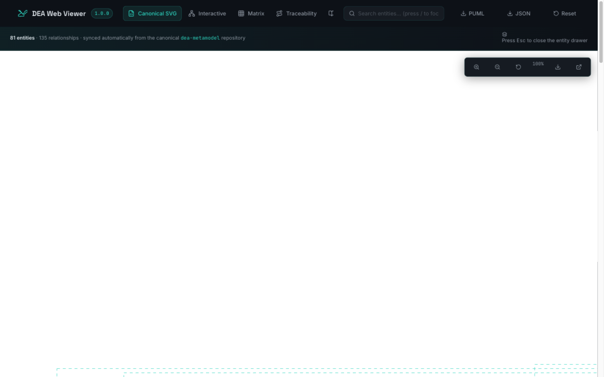
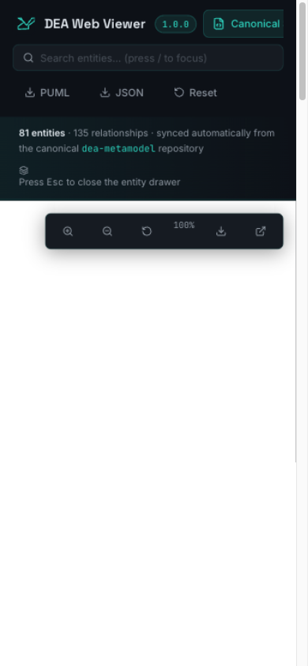
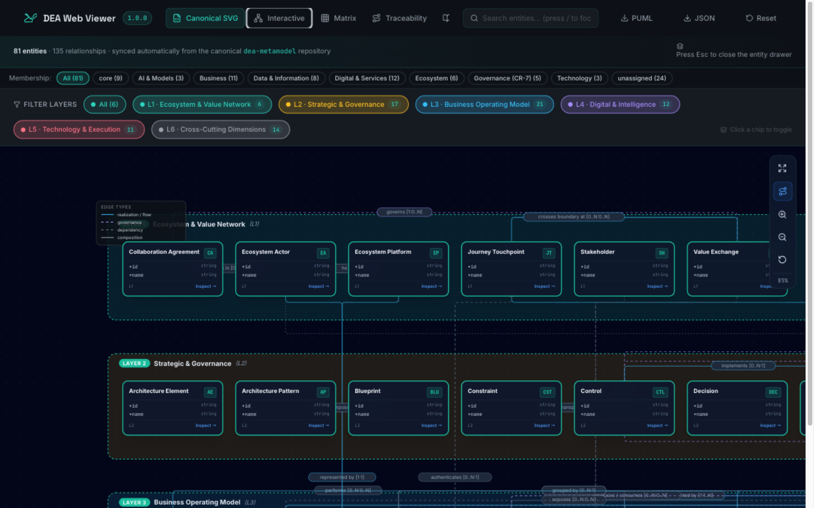
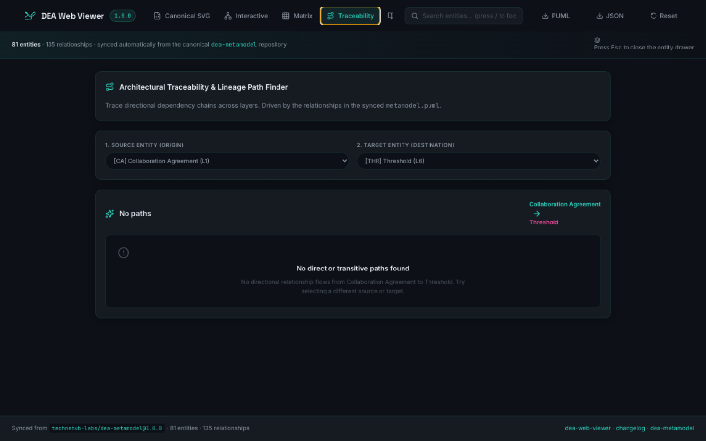
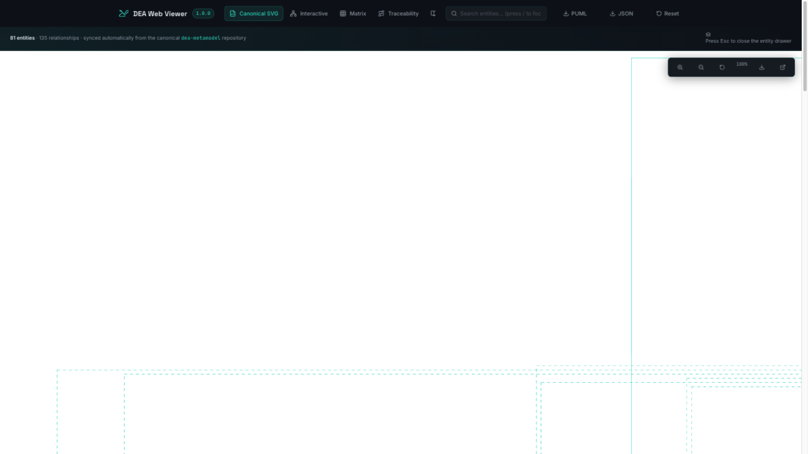
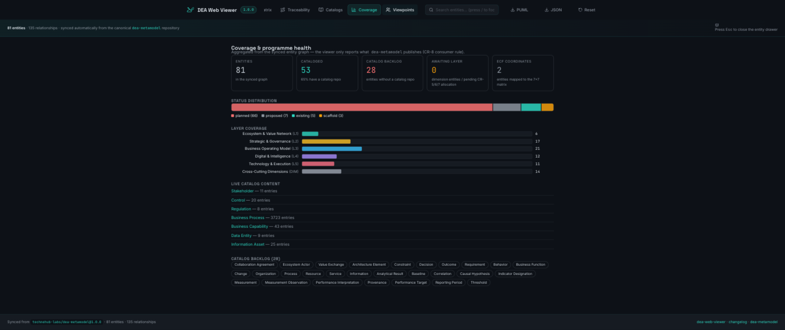

A visual strategy for making the metamodel viewer feel effortless on every screen: navigation you can always reach, canvases that fit before you touch them, entry points that never dead-end, and one consistent way to inspect anything. Responsive web design is treated as a requirement, not a phase.
Every finding below was reproduced live on the deployed site on 2026-11-23, at five viewport widths,
and cross-checked against the source (src/App.tsx, src/components/*, src/lib/url-state.ts).
| ID | Severity | Finding | Where |
|---|---|---|---|
| F-01 | P0 | Two of seven views are unreachable by mouse. The search combobox renders on top of the Coverage and Viewpoints tabs at 1440, 1920 and 2560 px. DOM rects confirm the overlap: at 2560 the search box spans x 1414–1606 while Coverage sits at 1438–1546. | Header.tsx |
| F-02 | P0 | No responsive layout below desktop. At 390 px the header stacks to ~250 px tall, all tabs but one are truncated away, and a “Press Esc” hint (a keyboard idiom) floats over a touch screen. There is no way to reach Interactive, Matrix, Traceability, Coverage or Viewpoints. | index.css, Header.tsx |
| F-03 | P0 | Deep links don’t restore the view. ?view=interactive is parsed but never applied — activeView is initialised to 'canonical-svg' and the URL is then rewritten back. Every shared link lands on the same default screen. | App.tsx:65 vs App.tsx:99–101, url-state.ts |
| F-04 | P1 | The first screen is blank. Canonical SVG loads at 100 % zoom with the diagram off-viewport; “Reset view” restores the same off-screen state instead of fitting content. First impression = white void (reproduced at 1440 and 1920). | CanonicalSvgView.tsx |
| F-05 | P1 | Traceability opens on a dead end. Random defaults (Collaboration Agreement → Threshold) produce “No paths found” as the first-run experience, with no presets, examples, or next actions. | TraceabilityPathFinder.tsx |
| F-06 | P1 | Interactive canvas drowns in always-on labels. Edge names + multiplicity chips render at every zoom level; cards clip at the right edge; the layer legend overlaps cards. Dense, but unreadable. | InteractiveCanvas.tsx |
| F-07 | P2 | A permanent “Press Esc to close the entity drawer” hint floats top-right even when no drawer is open, on every view, including touch devices. | App.tsx header area |
| F-08 | P2 | Inconsistent inspection flow. Selecting from Matrix jumps to Interactive; from Catalogs jumps to Canonical SVG; the drawer exists only as a desktop right panel — no mobile equivalent. | App.tsx onSelectEntity handlers |
| F-09 | P2 | Matrix relationship cards clip below the fold with small click targets; the cross-layer matrix itself is the strongest view and deserves promotion. | MetamodelMatrix.tsx |
| F-10 | P2 | Coverage is hidden yet strong. The best “programme health” dashboard in the suite is unreachable by clicking (F-01) and its status bar reads as an alarm (66 planned, drawn in red). | CoverageDashboard.tsx |






Each strategy pairs a problem (with its finding IDs) with mockups and a concrete user journey. Mockups are schematic — real data shape, not real data — and every one is drawn at three device widths because responsiveness is part of the strategy, not a follow-up.
Replace the single-row header with a shell that reflows by breakpoint: an icon rail on desktop/tablet, a bottom tab bar on mobile, and a header that can never paint over navigation again. Fixes F-01, F-02, F-07.
Every canvas computes its viewBox from content on load and on resize, then reveals detail by zoom: structure at a distance, names mid-range, attributes up close, edge labels only on demand. Fixes F-04, F-06.
Every first-run and empty state offers a next action: a landing overview with guided starts, traceability presets with auto-suggested connectable pairs, empty states written as invitations. Fixes F-05, supports F-04.
A single inspector component serves every view and every device: right drawer on desktop, drag-handle bottom sheet on mobile, with consistent tabs (Overview / Relationships / Impact / Catalog) and “continue in…” actions that keep context when switching views. Fixes F-07, F-08.
Make the URL a trustworthy state container (fix the ?view= hydration bug first),
then promote Viewpoints from a buried tab to persona landing pages with previews and one-tap sharing. Fixes F-03, F-10.
view / layers / membership / entity / q — and, after the F-03 fix, a colleague opening it lands on the same view, same filters, same selection. Today they’d land on Canonical SVG with the URL silently rewritten. fixes F-03 · App.tsx:65 hydration + popstate sync<iframe> with ?embed=1: the viewer renders chrome-less — just the canvas and a tiny attribution bar. optional embed mode, phase 3The contract every component must honour. This is the acceptance checklist for “works as responsive web design”.
| Component | <768 mobile | 768–1179 tablet | ≥1180 desktop |
|---|---|---|---|
| Navigation | Bottom tab bar (4 + More sheet); More lists all 7 views | Icon rail, 56 px, labels on long-press | Icon rail + labels, grouped Explore/Analyze/Use |
| Header | One 48 px row: brand · search icon · ⋯ overflow | Brand · inline search · ⋯ | Brand · full search · PUML/JSON/Reset |
| Search | Full-screen overlay, ≥44 px rows | Inline field | Inline field + ⌘K palette |
| Filter bars (layers/membership) | Collapsed into a Filters button with active-count badge; opens sheet | Horizontally scrollable chip rows | Full chip rows (today’s pattern, kept) |
| Canvas | Fit-on-load; pinch zoom; structure tier <60 %; floating toolbar bottom-right | Fit-on-load; toolbar bottom-right | Fit-on-load; minimap; toolbar top-right |
| Matrix | Sticky first column, horizontal scroll with edge-fade hint | Sticky first column | Full table |
| Entity inspector | Bottom sheet, drag handle, peek → full | Right drawer 320 px | Right drawer 380 px |
| Coverage dashboard | KPI cards 1-col; status bar segments ≥8 px with legend below | KPI 2-col | KPI 5-col (kept, widened) |
| Catalogs grid | 1-col cards; description clamped to 3 lines with “more” | 2-col | 4-col (kept) |
| Keyboard hints | Hidden (pointer:coarse media query) | Hidden on touch | Shown as today |
| Deep links | All widths: URL is restored on load (view, entity, layers, membership, q) and on back/forward (popstate). Sharing = state. | ||
Sequenced so each phase ships value on its own and unblocks the next. Phase 0 is mostly deletion and small fixes.
view + q on boot F-03 · App.tsx?embed=1 for docs/wikisAcceptance is measurable, and every metric is checkable with the same scripted-browser pass used for this audit.